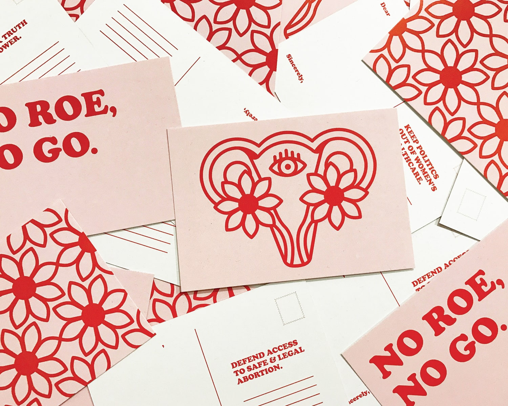

Project Gallery
Project 1: A reinterpretation of a classic work
Majuri’s version of the book is made up of fifteen booklets, which each contain one of the essay’s informative chapters, making the writing both approachable and enjoyable in short windows of time,” as the designer explains. Majuri has added repeating patterns custom-designed by herself, as well as etchings by Rembrandt. These design choices relate to the ideas about reproduction of artworks expressed in Benjamin’s writing.
Project 2: A unique printed book

Work on a publication focusing on Canadian foodd showcases their skills in branding, copywriting, photography, videography, and more. Adding a printed project
Project 3: A creative coloring book

Portugal-based designer Mariana Malhao’s online portfolio is full of playful projects, but this coloring book definitely stands out. Malhao has lent her design skills to a range of projects, from jewelry to ceramics. This coloring book represents her uniquely playful style in a creative way.
Project 4: Postcards with a message
created this set of postcards to provide a platform for “babes of all genders everywhere to stand up to their elected officials and demand the protection of women’s reproductive rights.”
Project 5: Posters illustrated with the alphabet
The results provide great inspiration for how to use limited materials to create something interesting.